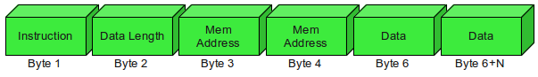

ACOS3 Smart Card
The ACOS3 card has 32KB of EEPROM, and initially it seemed ideal for my project. As it turns out, the card functions more as a storage medium with native functionality limited to read/write operations. These operations are performed by sending machine code instructions known as Application Protocol Data Units (APDUs) to the card.
Read operation:

Write operation:

For example, the following command:
WRITE: 11 BYTES TO 00 3Ah: HELLO WORLD
Would be sent to the card as:
91 00 3A 48 65 6C 6C 6F 20 57 6F 72 6C 64
So using the ACOS card would likely require the development of a custom application with its own hardware drivers. However, it's just about possible to script a series of actions using the g(scriptor) application, which is available for Linux.
OpenPGP Cryptographic Key Storage
The second set of kit I acquired was for storage and use of conventional OpenPGP keys, with the SCR3500 reader chosen for portability.
- ZeitControl BasicCard ZC5.4
- Identive SCR3500